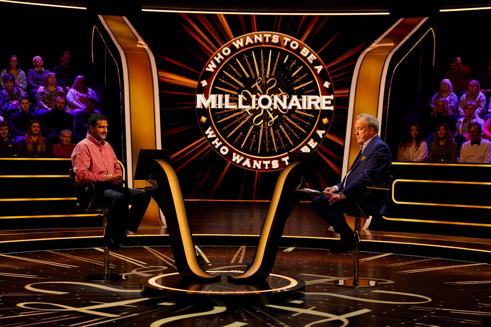

Die Geschichte

Who Wants to Be a Millionaire? wurde 1998 in Großbritannien ins Leben gerufen und entwickelte sich schnell zu einem weltweiten Phänomen. Zwei Moderatoren prägten die britische Version entscheidend: Chris Tarrant, der die Show von Anfang an führte und ihr zu internationalem Ruhm verhalf, sowie Jeremy Clarkson, der das Format ab 2018 mit seinem markanten Stil neu interpretierte.

Chris Tarrant war von 1998 bis 2014 das Gesicht der britischen Version von Who Wants to Be a Millionaire?. Mit seiner ruhigen, aber spannungsgeladenen Moderation machte er das Quizformat einzigartig. Sein ikonischer Satz „Is that your final answer?“ wurde weltberühmt. Tarrants Ära war geprägt von unvergesslichen Momenten – darunter der Skandal um Charles Ingram, der mit einem Husten-Komplott versuchte, sich zur Million zu betrügen.

2018 übernahm Jeremy Clarkson die Moderation der Sendung. Bekannt aus Top Gear und The Grand Tour, brachte er seinen unverkennbaren Humor und seine schlagfertige Art ins Format ein. Clarksons direkte und oft ironische Kommentare sorgten für viele unterhaltsame Situationen. Besonders beeindruckt war er vom Millionengewinner Donald Fear, der 2020 alle Fragen in Rekordzeit meisterte.

Chris Tarrant und Jeremy Clarkson stehen für zwei unterschiedliche Epochen der Show. Während Tarrant für Spannung und Tradition sorgte, brachte Clarkson eine moderne und humorvolle Note ein. Doch eines bleibt bis heute gleich: Die Faszination für das Quiz, das Menschen weltweit in seinen Bann zieht.